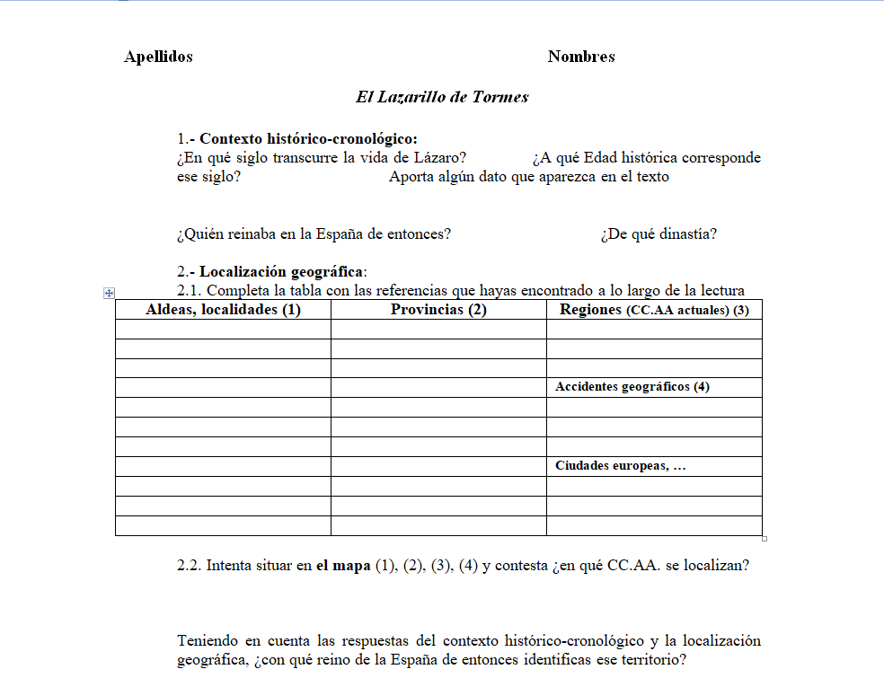
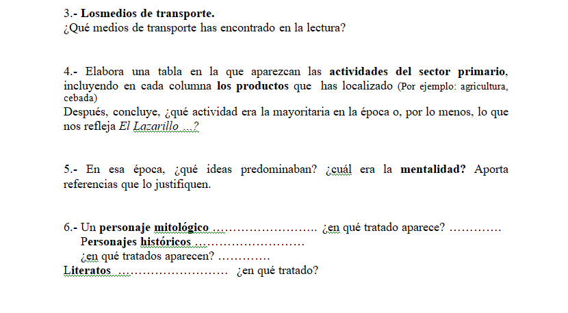
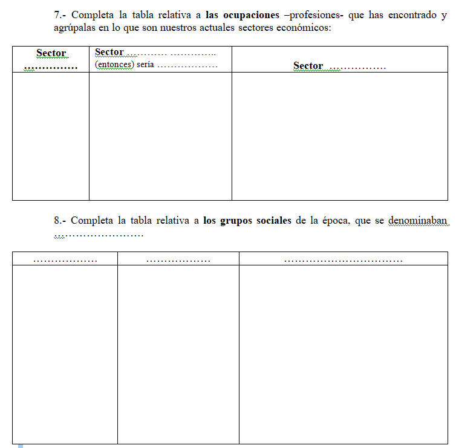
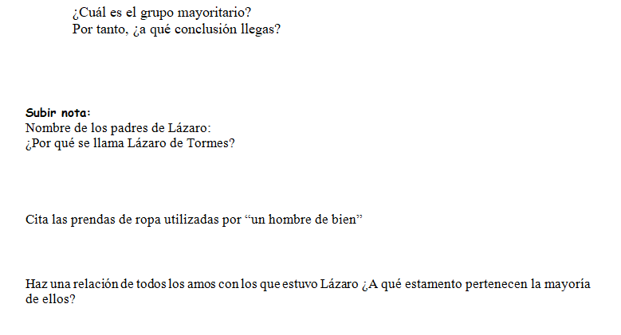

Ficha sobre "El Lazarillo de Tormes"
En esta tarea nuestro propósito es conocer al protagonista de la obra y sus circunstancias. Para ello utilizaremos, en primer lugar un cuestionario donde trabajareis en grupo después de haber leído el libro. Este cuestionario nos permite tratar la asignatura de una manera interdisciplinar con el departamento de Geografía e Historia. Para ello vamos a formar grupos de 4 alumnos/alumnas y trabajaran las fichas, una vez finalizadas se expondrán en voz alta. En esta ocasión lo haremos en el aula de informática para que podáis buscar la información en Internet. Por lo tanto nuestra herramienta para trabajar será el ordenador, además de la ficha en papel que tenéis que completar.



